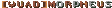
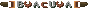
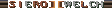
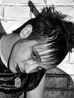
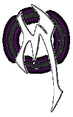

Real Name: Manuele
Callsign:
Other akas:

,
Birthday: 19/07/1989
Hometown: Lavezzola, Italy
Member since: 11/2002
Older affiliations: [M.P]
Favourite map: DM6
Favourite weapon: rocket launcher
Status:  inactive
inactive


[QUAD] Kid moved backwards from Quake III: Arena (now Quake Live) to Netquake showing great moves and aim. Unbelievably skilled in FFA, he learned whatever oldskool players had to teach and mixed that all with latest techniques to become an even better quaker.